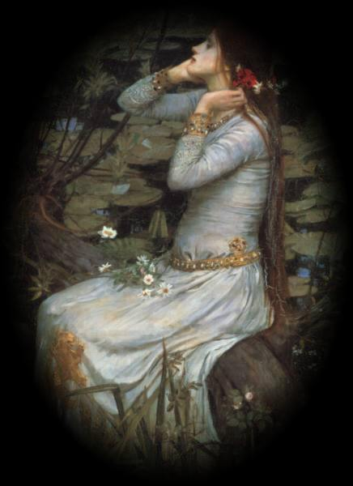

EX VOTO
Rien ne reste de son image: un parfum
s'exhalant à la lumière de l'aurore
d'églantines mouillées ouvrant dans le vent
lumineux leurs curs comme tout prêts d'éclore
Ou de lys purs; les mains blanches; les cheveux
des nuits où frissonnent l'amant et l'amante
au bosquet fleuri et sauvage un peu
où la grâce de deux étoiles chante
Si simplement, si clairement, et pourtant
un tel secret fait remonter leur lumière
que l'on ne sait si leur limpidité tend
une pitié ou l'aveu d'une prière.
Il pleut comme la vie et il flotte autour
d'elle le voile suave des vierges
pervenches et des bouillonnements de jours
épars, flottant au long du fouillis des berges
Noyées de nuit, lorsque les bosquets sont pleins
de biches dont les corps roses dans les branches
se fondent, et les yeux mirent des jardins
neigeant des senteurs de lys purs et des blanches
Eglantines sauvages souriant au travers des branches.
Juin 1953
Michel Galiana (c) 1992
EX VOTO
Remnant of her image is none but a perfume
arising in the indistinct light of the dawn
from dewy wild roses that will burst into bloom
once on their opening hearts the sunny wind has blown.
Or from lilies as white as her hand. And her hair
evokes the chilling night surrounding lovers
in a flower garden that's half-tilled but so fair;
and the melodious spell of her eyes, of those twin
Stars whose ingenuous gleam illumines the darkness;
and yet a deep secret pervades their light: no one
could possibly decide if, hid in their clearness,
an avowed request lay or else sheer compassion.
In the rain I feel life and in this floating haze
which wraps a veil round her, arising from the blank
periwinkles and from all these eddies of days
scattered, floating along the tangle of the banks
Now plunged into darkness, while every grove seems full
of deer whose rosy hides to a maze of patches
merge together , whose eyes mirror gardens as cool
as snow with all these scents of lily and roses
Emerging cheerfully from behind the branches.
June 1953
Notes :
Transl. Christian Souchon 01.01.2006 (c) (r) All rights reserved
Ce poème maladroit relate l'événement le plus marquant de la vie de Michel qui venait juste d'avoir 20 ans. La jeune personne concernée est nommément désignée de façon criptique.
Le poème suivant (tiré du manuscrit "Milliaires") fournit un indice.
BLASON SECRET
Sous le chiffre d'un entrelac de vignes -vierges- de vignes
Illuminant une porte où mes doigts ignorent la clef
Rayonne un sourire qui a la fixité d'une étoile
Ou d'une braise pour enflammer ma forêt.
N'éveillez pas les biches qui sommeillent dans son regard.
Eveillez plutôt, sur son lit d'échec, l'unicorne.
Le chiffre dénoué noué, le nom se lève.
26 juin 1965
(13 years after)
Il en est de même du poème "Noces de Figaro
On ne peut s'empêcher de penser à la Chanson de Fortunio d'Alfred de Musset pour laquelle
Jacques Offenbach composa la mélodie qui sert de fond sonore à ette page.
"Si vous croyez que je vais dire
Qui j'ose aimer,
Je ne saurais, pour un empire,
Vous la nommer. .."
This akward poem relates the most important event in 20 year old Michel's life. The young person concerned is named in a cryptic way.
The following poem (from the MS "Milestones") gives a hint.
SECRET BLAZON
Sign intertwined with vine, -with Virginia creeper,
Illumining a door to which I have no key,
Radiating a smile as a fixed star steady
Or setting my forest ablaze with its ember.
Never wake up the doe whose sleep her glance adorns!
Enlivened be instead the chess board unicorn.
Untangle the tangled cypher, the name shall rise.
26th June 1965
(13 years after) *
*In English in the original
So does the poem Figaro's Wedding
One cannot help thinking of Fortunio's song by Alfred de Musset, to which Jacques Offenbach composed the tune you hear as a sound background.
"Don't think I am going to say you
Whom I dare love
I would not even for an empire
Tell you her name..."